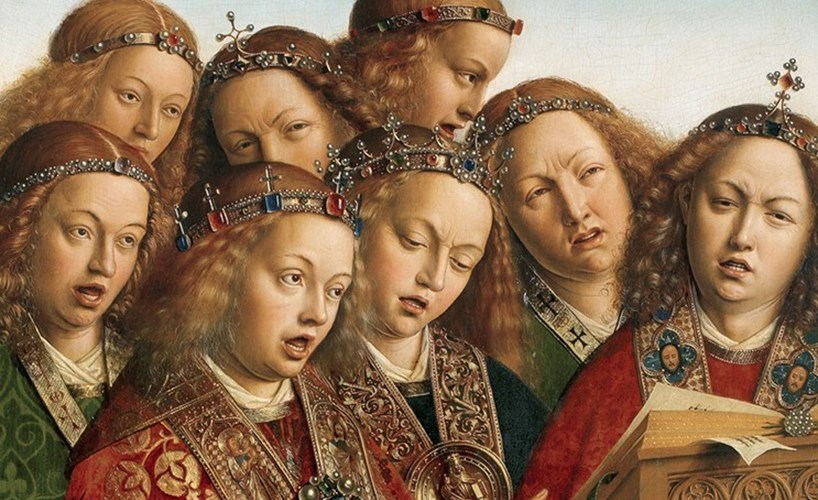

El motete y la misa
La música religiosa adquiere un carácter internacional. Los compositores más relevantes son contratados como maestros de capilla de las principales catedrales y viajan continuamente por Europa.
- El principal género de música religiosa es el motete, una pieza a varias voces (4 o 5 normalmente), sobre un texto religioso en latín y de textura predominantemente polifónica, que utiliza la técnica del contrapunto imitativo.
- El otro género musical religioso es la misa. Se componía poniendo música a las oraciones más relevantes de esta celebración, que son el Kyrie eleison (Señor, ten piedad), Gloria, Credo, Sanctus y el Agnus Dei (Cordero de Dios).

Algunos compositores destacados fueron Josquin des Prez, Orlando di Lasso y Giovanni Perluigi da Palestrina. En España sobresalieron Tomás Luis de Victoria (Ávila) y los sevillanos Cristóbal de Morales y Francisco Guerrero.
ESCUCHAMOS PERO NO JUZGAMOS: MOTETE Y MISA
Misa
Escucha este fragmento de la misa Ave Maria Stella, de Tomás Luis de Victoria (1548-1611), e intenta identificar a qué oración de las que hemos nombrado pertenece. Escúchala ahora en el siguiente enlace siguiendo la partitura.
Victoria - Missa Ave Maris Stella a 4: Kyrie
Motete
Escucha ahora este motete religioso del mismo compositor. Justifica por qué pertenece a este género musical. Para ello, identifica en esta obra al menos tres características de la teoría que se cumplan en ella.